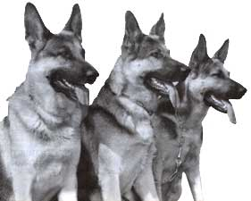
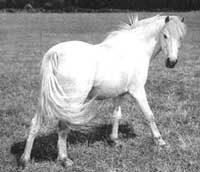
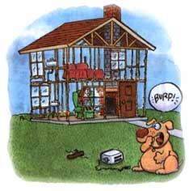

Pet Health
If your dog is becoming destructive or unruly, it may not just be his disposition.
He may be sick.
Human households have condomestic animals for thousands of years. At present, no less than 61% of U.S. households have animals, and more than half have more than one animal. The popular literature has extolled the beneficial consequences of contact with animals for human health. During the past decade, television, radio, and the print media have discussed the value pets have in lowering blood pressure, providing aging folks with constant companionship, improving survival after a heart attack, and making people of all ages feel brighter and less lonely. Various studies have demonstrated that household pets are perceived to be family members.
Given these facts, it's almost impossible to believe that in 1990 alone, about 10 million dogs and 8 million cats were euthanized in animal shelters across the United States. And think of all the pets that have perished on the streets without becoming a statistic. Unwanted behavior was the number one cause for premature death of three-fourths of these animals. Only 12% of them were euthanized because of disease or old age. Most dogs and cats become unwanted and homeless when owners can no longer cope with behavior problems-behavior that is no longer acceptable to owners, neighbors, or society.
These sad statistics are why behavior management is fast becoming an extremely important function and responsibility of veterinarians. As important as it is to vaccinate, neuter, spay, and manage kidney and heart disease in to day's pets, it's just as important that veterinarians consider their responsibility to help clients and their pets deal with unwanted and unac ceptable behavior. In fact, veterinary hospitals are often the first place to seek counseling for behavior problems in pets because of the importance in ruling out primary or secondary medical problems that may be the root of the unwanted behavior.
Some examples of natural behaviors of dogs and cats that are often unacceptable to people are chasing, biting, growling, and other forms of aggression, marking with urine, pulling at collars, territorial aggression, barking, jumping, roaming, and digging.
The first generality in dealing with truly troublesome behavior problems is this: Seek veterinary help first! I can't tell you the number of animals I've seen with medical problems that actually cause unwanted behaviors. My favorite example is the family who brings in their ancient feline companion for euthanasia because "she's been urinating outside the litter box all week and she's old anyway." Upon further questioning, it becomes apparent that the cat actually has a cystitis, or bladder infection, confirmed by a simple urine analysis, common in older patients, and treatable with appropriate nutritional counseling and antibiotic therapy.
The second generality is to be patient, especially with young puppies and kittens, and with the geriatric animals (these days considered to be any dog or cat over nine years of age). Raising a puppy or kitten is similar to raising a small child. Time and perseverance, which in our hectic daily lives can be hard to come by, are of utmost importance. Youngsters are not going to learn new behaviors within a week or two; some may take a month or more. Repetition is also a key.
You, as a parent, must think through all aspects of the situation that may result in the unwanted behavior, and then either avoid these or change certain aspects. It may be helpful to arrange a time to speak to your veterinarian to devise a program that analyzes and modifies the way you, the owner, reacts to the behavior. For instance, is it the older dog who's at fault for chronically jumping on the couch, or you for moving to another couch and avoiding him every time he jumps?
Physical punishment of any behavior, especially aggressive behavior, is counterproductive, as it usually leads not only to fear and bodily harm, but a significant aggressive response from the pet. Positive reinforcement is not only conducive to long-term learning, but helps bond the animal to the owner, relaying a sense of trust and understanding, instead of intimidation and frustration.
Dear Andrea:
Our six-year-old German shepherd has become very protective of his food bowl recently. We have a baby in the house and are afraid that one day the baby will wander too close to his bowl and get bitten. Can we train him at this age?
Anne Marie Baker
Minneapolis, Minnesota
Dear Anne Marie:
Food guarding is a common behavioral problem that may be linked to a syndrome in dogs known as dominance-aggression. Owners are almost always unaware that control of food is a critical aspect of the social relations among dogs. For instance, it is not uncommon to learn that when the dog was young, it growled anytime it was approached while eating. The owners believed that the puppy was afraid its food would be taken away and wanted to reassure it that they were friendly, so they left it in peace. The consequence was that the dog learned it simply had to threaten people to drive them away from food. Dogs with this syndrome commonly growl at people who approach their favorite resting area, such as a pillow or couch. Again, family members may have fostered this behavior by assuming that the dog should not be disturbed when resting, even if this meant giving up their own favorite couch.
Again, I would suggest first seeking the care and consultation of a veterinarian to make sure the dog isn't experiencing pain or having difficulty eating. Tooth abscesses, fractures, or oral infections may cause aggression associated with eating. Even eye and ear problems may initiate an angry response around feeding time. Many gastrointestinal problems, such as parasites, food intolerance, or maldigestion may also cause displaced aggression. Your veterinarian is able to examine your pet for these things, and could do so via a simple physical exam.
If the patient is an intact male, castration may make the dog less aggressive, but I think that this is more helpful in younger animals. It may also be detrimental to stress the pet with surgery and hospitalization at a time in his life when he is already confused by the arrival of a new baby.
Because dogs with this syndrome have the potential to severely injure people, the decision to attempt treatment must be made carefully. It may be beneficial for you to separate the child from the dog entirely, which could cause further separation anxiety, but may be necessary for the safety of the baby. It's one thing to modify the behavior of a 5-pound poodle who hoards clothing, but a different situation completely to deal with a 100-pound shepherd who may become unmanageably aggressive.
Let's examine your behavior around feeding time. Do you place the food down fearfully and fast? Does the dog take command of the situation by barking for the meal or begging and is then rewarded by being fed? Try placing the food down first and then allowing the dog to enter the room, so he associates few acts of yours with the actual feeding; hence, he will have less to focus his aggression on.
Some veterinary behavior specialists have advocated teaching the dog to assume a "down position" to reduce its dominance and aggressive tendencies. Since any physical manipulation of an aggressive animal may accentuate its aggressive tendencies, the dog is taught to eat from a submissive position (laying on its chest, elbows, and hocks) by progressive, yet positive, reinforcement. With the dog sitting, the food is held so that the dog must lower its head slightly to obtain the reward. The owner should say "down" and give the food reward when the dog lowers its head. Over time, the owner requires the dog to lower itself more and more in order to receive its food. Eventually the dog must lie down to receive the food. In such a position, few dogs will feel inclined to become dominant. The dog should also be required to exhibit this acceptable, submissive behavior before being fed, let out, or petted: This will encourage future submissive behavior and eventually stop the animal from growling near its food.
Certain spontaneous growling is initiated by the owner staring at the pet, standing over its shoulders, or behind its back while it is being fed. Think of your actions during the entire feeding regimen and analyze the baby's presence during the meal. Don't forget to offer the dog plenty of care and compassion, such as grooming, exercise, and attention independent of the child at first and then slowly (and always supervised) with the child. Make sure the dog knows that even though there's a new baby in the house, you haven't forgotten who deserves the milk bones!
Some great behavior books to help with dog problems are:
How To Be Your Dog's Best Friend, (1978, Little, Brown & Co, Boston, MA) by the Monks of New Skete.
Good Manners for the Modern Dog, (1990, Perfect Paws, San Francisco, CA) by Gwen Bohnenkamp.
Dear Andrea:
I have a quarter horse that has been suffering from diarrhea for the last six months. A local horse doctor suggested giving him wheat bran; an animal magazine recommended brewer's yeast; and my small-animal vet suggested yogurt. All of these sugges tions helped, but the diarrhea inevitably returned. I feed the horse "Target" feed and timothy hay. Please help.
- Walter Nickel
Severn, Maryland
Dear Walter:
First off, look around and check if the other horses on the farm are also abnormally thin or suffering from diarrhea. If so, nutrition and/or parasites may be the problem. Examine the quality of the feeds. Most horses will maintain weight without gastrointestinal problems on 4-8 lb/day of a fresh grain and 8-10 lbs./day of a high-quality grass hay. Examine your management. Are there any routine farming changes (time of haying, freezing of water, entry of other animals into pasture) that might correlate with the onset of the problem? Winter months are times when problems may most likely be a true individual medical, versus management, disease.
Feed the horse and observe it eating. If the animal has difficulty chewing, drops grain, or throws its head while chewing, your veterinarian may need to check the animal's teeth for sharp points, which could contribute to maldigestion and diarrhea. However, chronic diarrhea in the horse is most commonly attributed to parasites. Specifically, Stongyles may invade the lining and arteries of the large and small intestines. Many of these parasites can also encyst in one area of the large colon, causing severe malabsorption of water and consequent diarrhea. Your veterinarian can prescribe a proper rotating anthelmintic (antiparasitic) program appropriate for your farm.
Some other more serious problems may result in chronic diarrhea, such as an inflammation of the colon with micro abscesses (granulomas) or tumor cells (lymphomas). Various bacteria (Salmonella, Clostridium) are also capable of causing diarrhea. Impactions of different areas of the horse's large intestine, particularly the cecum or fermenting chamber, may result in colic or severe abdominal pain, and in diarrhea. Your veterinarian can perform a thorough physical and rectal exam to help determine if any of these conditions are present. A parasite count or bacterial culture of the manure can check for infectious agents.
In an older animal, some routine blood chemistry profiles can be run to check for liver or kidney disease, both of which can contribute to diarrhea. I would suggest a thorough exam and a few of these simple, inexpensive tests before choosing feed additives or arbitrary remedies to resolve this gastrointestinal problem.
SAD STATISTIC:
In 1990 alone, approximately 10 million dogs and 8 million cats were euthanized at animal shelters in the U.S.
Dear Andrea:
We recently bought a six-month-old Labrador retriever for our young son to grow with. She's now chewing the house to shreds, from carpets to curtains to slippers to shoes. HELP!
-Louise Palmer
Binghamton, New York
Dear Louise:
Chewing is a normal canine behavior. Dogs use their mouths like we use our hands for grasping food, gaining information about the environment, relieving boredom, and reducing tension. Chewing is also an important adaptive behavior that protects the animal from entrapment. Besides all this, for puppies at least, it appears to be great fun. However, chewing becomes an unwanted act in a domestic environment, especially when a valued object is damaged.
There are many reasons why dogs chew. Some are quite obvious, such as the gingival irritation that motivates a teething puppy. Your dog should have most if not all of its permanent teeth in by six months of age, so I would anticipate that this is not her problem. Certain dogs chew aggressively because it invites attention from the owner, like a tug-of-war game. Think about it for a minute: Can we really expect a puppy to differentiate between a towel used to tease it into play and curtains fluttering in the breeze?
Anxiety is a leading cause of destructive chewing by adult dogs. People bite their nails, smoke, and drink. Dogs vocalize, pace, and chew. In most cases, chewing damage due to this type of anxiety occurs when the owner is not at home or is unavailable to the pet.
Phobias, such as fear of thunder or other loud noises, can result in destructive chewing. Doors, window trim, and walls often become the targets of chewing. Inappropriate punishment methods, especially delayed or very harsh punishment, can trigger problems. Delayed feeding can also result in chewing problems, as the hungry dog explores the house using its mouth to try to open doors and containers in search of food. Boredom, lack of stimulation, and social isolation can also contribute to destructive chewing behavior.
First, rule out any gastrointestinal or teething problems your pup may have by taking it to your veterinarian. Upper gastrointestinal (GI) irritations, such as gastritis or esophagitis may lead to destructive chewing. All too commonly, young animals are affected by parasitism that may cause simple GI upset and reflex chewing.
It's difficult to pinpoint the cause of chewing in your pup, but I suspect that it nay be related to age, a high level of energy, and possibly a need for social interaction or attention. You may be promoting the chewing behavior by actions you are not even aware of, such as throwing laundry on the floor, opening the curtains in front of the dog, etc. Try to analyze when the dog chews. It maybe helpful to keep a diary listing occurrences of chewing and relative information to pinpoint the causes that initiate the behavior.
Direct the dog's chewing toward appropriate objects, such as specific toys. You can even smear the toys with a piece of cheese, some peanut butter, or gravy to encourage chewing of them. The important thing is to never take proper chewing for granted. Every time the dog's mouth touches the toy, it should receive praise or reward.
At the same time that you promote this desirable chewing, discourage unacceptable chewing by spreading cayenne pepper, mixed with a small amount of petroleum jelly, or oil of citronella, on a piece of wood, a scrap of carpet, or an old shoe. If the dog has a habit of chewing clothing, try to put it out of reach on a regular basis. Every day, try moving the offending items to a new area in the house (confusion in itself is a deterrent). Hide booby traps (such as balloons or a stack of beverage cans containing coins) near the items you'd like to discourage chewing on. Mousetraps set in an upside-down position are also very effective. Leave the chew toys readily available during these processes and place the emphasis on positive-reinforcement training. Use the chew toys to play with the pup, teach it to fetch, and always associate their use with praise and reward.
If daytime boredom seems to cause the chewing, try leaving the radio on during the day, or crate train the animal. Teaching a puppy to stay crated for progressively longer periods of time not only teaches it respect for its environment (the crate) but also may allow you to retain some of your valuables!
CHEWING AWAY THE BOREDOM
People bite their nails, smoke and drink when frustrated. Dogs vocalize, pace and chew.
|
Most horses need 4-8 lb/day of grain and 8-10 lb/day of quality grass hay. |
 |
 |
|
 |
|
|